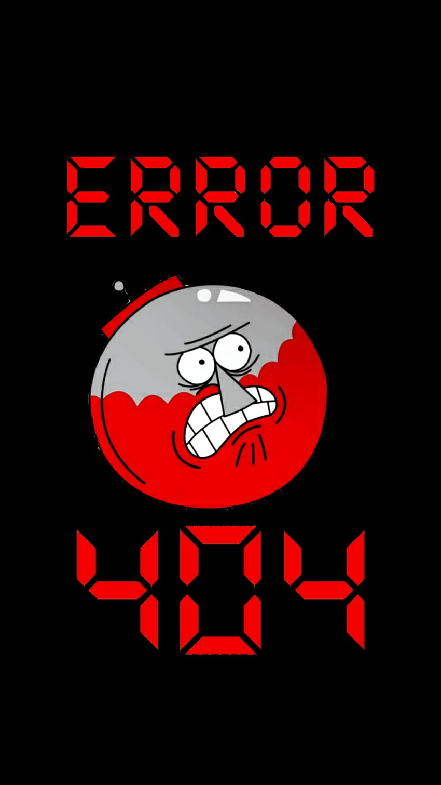

<ion-header [translucent]="true">
  <ion-toolbar>
  </ion-toolbar>
</ion-header>

<ion-content [fullscreen]="true">
  <ion-header collapse="condense">
    <ion-toolbar>
      <ion-title size="large">notfound</ion-title>
    </ion-toolbar>
  </ion-header>
  
<div class="error">
  
</div>

</ion-content>
